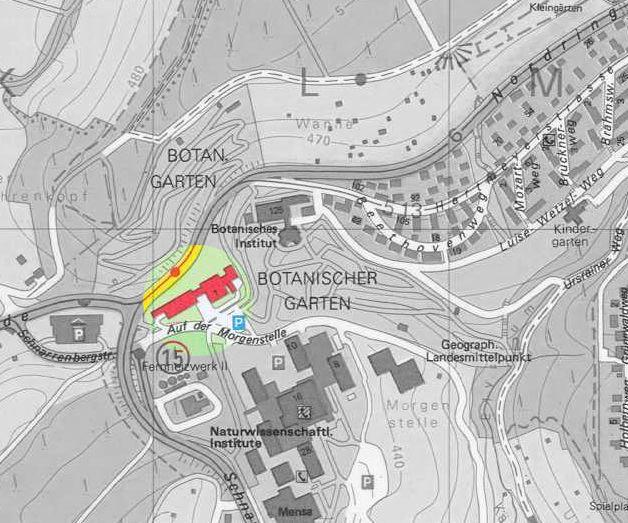

|
Linux User Group Tübingen | ||
|
|
Linux User Group Tübingen | ||
|
|
|
Tübingen finden Sie ganz leicht über diese Karte.

Immer dem Nordring nach (Naturwisschenschaftliche Institute)...

...dann Richtung botanischem Garten...

...und schon sind Sie da.
Das Botanische Institut ist über die Buslinien 5, 13, 15 (jeweils Haltestelle Botanischer Garten), 18 oder 19 (Haltestelle BG Unfallklinik) zu erreichen. Die Anfahrt via Pkw erfolgt über den Nordring, Parkmöglichkeiten bestehen im Uni-Parkhaus (Nord) oder direkt vor dem Botanischen Institut (Die Schranke am Zufahrtsweg ist am Wochenende geöffnet.).
| Letzte Änderungen am
23.04.98 von Daniel Kobras |